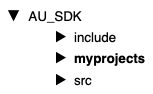
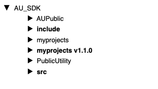
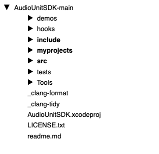

SDK Folder Naming Convention
You will need to navigate either Terminal or the Windows Command Prompt to various locations within your SDKs to run CMake. To keep the folder names simple and easy to use with Terminal/Command Prompt, I use a naming convention with:
- no whitespaces (blanks)
- no numbers
- no special characters
There are currently three supported APIs for ASPiK: AAX, AU and VST and each SDK consists of a series of subfolders with AU being the simplest and VST being the most complex in terms of folder hierarchies.
You can setup individual project folders for each API or create a universal folder that will allow you to build for all APIs at once. Here we will set up each SDK independently, and then show the universal SDK folder settings. Note that you can change this stuff in the CMakeLists.txt file if you know how. Then, you can hardcode whatever folder hierarchy makes sense for you.
Alternate SDK Folder Structures
If you would like to arrange your SDKs in a different manner you can do that as well but you will need to edit the CMakeLists.txt file to do so and you need to know how to edit CMake files properly. The SDK folder locations are set near the top of the file and are used after the user-editable stuff near the middle. It is strongly advised to first get your ASPiK projects up and running with the folder hierarchy described here. Once you have your first projects compiling properly, you may then want to experiment with alternate SDK folder hierarchies.
Remember the VSTGUI4 Library!
The vstgui4 sub-folder MUST lie within your myprojects folder or you will receive millions of error when you compile mentioning "vstgui" so remeber to add this folder when you are done setting up the SDK outer container folders. See the previous ASPiK Project Folder section.
AU SDK
The AU SDK is rarely updated as it has been stable and effective for many years. In fall 2023, Apple updated the AU SDK to v1.1.0 and began using GitHub to host the SDK. This version of ASPiK requires the new v1.1.0 SDK. There were changes in the new SDK that make the old plugin code incompatible without changing numerous functions. The AUInstrumentBase was removed so the synth shell code changed to accomodate. However, the changes were fundamentally easy and minimal, and there was no change to the ASPiK core.
NEW USERS
We will setup the AU SDK folder and sub-folders to match the folder hierarchy in the FX and synth plugin books. This way, if you are working from them, all the existing text will be correct except the names of the two sub-folders which are only stated once in the beginning. The original SDK used two sub-folders named AUPublic and PublicUtility. The new SDK uses two sub-folders named include and src.
For the AU SDK, you first need to create an outer container for the two SDK sub-folders. You may name this folder whatever you wish - I use the name AU_SDK for my folder so we will use it here, and this is repeated in the books. And, if you decide to use the Universal API paradigm instead, you can re-use the same AU_SDK outer folder without issues.
Add the myprojects subfolder.
Go to https://github.com/apple/AudioUnitSDK and download the SDK. When you unzip the SDK, it will expose the outer folder named AudioUnitSDK-main. Inside of that folder are our target SDK sub-folders, include and src. Copy these two folders into your AU_SDK folder. Place your myprojects folder in parallel with the two SDK sub-folders and inside of your outer AU_SDK folder like this:

Then, place the vstgui4 folder inside of myprojects and you are done.
AU v1.0 USERS
If you have already built AU plugins with ASPiK, you have two choices here and you can control this by manually editing a cmake file if you like. The ASPiK default is to merge the old and new SDKs by simply copying the include and src subfolders into your existing AU_SDK folder. Then, create a new myprojects subfolder for the new SDK, and add the new vstgui4 graphics subfolder for this ASPiK SDK version. You will still be able to build both old and new projects from the same folder since the files do not overlap and the new sdkj is namespaced just to make sure. If you use this default MERGED paradigm, your AU_SDK folder will look like this:

STAYING WITHIN THE NEW SDK FOLDER
The second choice for dealing with the new AU SDK is to work within this folder by creating a new myprojects sub-folder inside of the main AudioUnitSDK-main folder. The new AU SDK has the same twin folder hierarchy as the old one and the relative location of your myprojects sub-folder is all cmake needs so that outer folder name is not important. Your new AU SDK folder will look like this:

If you do not use the Universal build option (build AU, AAX and VST in the same project) then you can do this without modification of anything else and you are done.
If you do intend on using Universal builds, then you will need to tweak one line of script in the outer CMakeLists.txt file for each new project. At the very top just below the # — BEGIN USER INPUT, set the BOOL value to FALSE indicating a NON-MERGED AU SDK folder; NOTE that the default value is TRUE (MERGED).
set(MERGED_AU_SDKS FALSE) # <– set TRUE (default) or FALSE (separate SDKs)
AAX SDK
The AAX SDK is contained within a series of subfolders of the current SDK branch. You must establish an account with Avid to gain access to the SDK and Pro Tools Developer Version and you will need an iLok2 device for storing your Pro Tools activation key.
The AAX SDK architects use numbers when naming the various versions such as AAX_SDK_2p3p0 which reads AAX SDK version 2.3.0 I prefer to rename the current SDK to AAX_SDK in keeping with folder naming convention discussed in the Intro to CMake portion of the docs, as well as shortening the name a bit. As with the AU projects, your myprojects subfolder will be located in parallel with the other SDK sub-folders at the outermost level.And, if you decide to use the Universal API paradigm instead, you can re-use the same AU_SDK outer folder without issues. My folder hierarchy looks like this:

VST SDK
The VST SDK is contained within a series of subfolders of the current SDK branch. The architects name the outermost folder VST_SDK and it contains two inner folders, VST2_SDK and VST3_SDK. In addition, there are two script files, one for Mac and one for Windows. These scripts install the VST2 SDK folders within the VST3 SDK so that you may use the VST2 wrapper that is included with the VST3 SDK.
Important: ASPiK VST projects are VST2 compatible by design and require the VST2 API files to be setup properly. This is fairly simple:
Windows
Navigate to the VST3_SDK folder that contains copy_vst2_to_vst3_sdk.bat, then, double-click on the copy_vst2_to_vst3_sdk.bat file to run the copy mechanism.
MacOS
Open a Terminal window and navigate to the VST3_SDK folder that contains the copy_vst2_to_vst3_sdk.sh file. Drag and drop the copy_vst2_to_vst3_sdk.sh file into Terminal. This will run the copy mechanism.
With the VST2 SDK installed, you can now create the myprojects folder for your exported projects. It needs to be located just inside the VST3_SDK subfolder, in parallel with the other SDK files, exactly as with AU and AAX. Your folder hierarchy should look like this:

You can see the SDK's CMakeLists.txt file - this is entirely independent of your exported projects and when you run CMake for the exported project, it will not interfere in any way with the SDK's files or CMake scripts. You should note that index.html is the Doxygen documentation link.
Universal Exported Project Location
Creating a folder hierarchy for the Universal setup is simple: create an outer folder to hold the SDK sub-folders in parallel with each other. I use the folder name ALL_SDK for my Universal projects. Your myprojects sub-folder is located in parallel with all three SDK folders and is not inside any one of them. My universal project folders look like this: